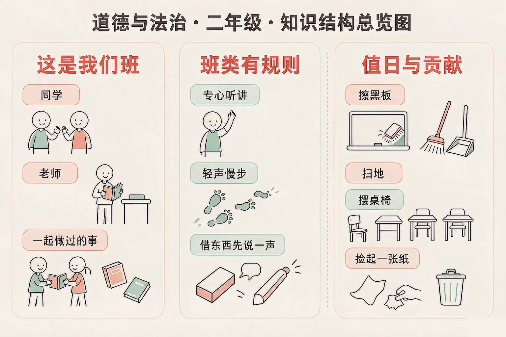
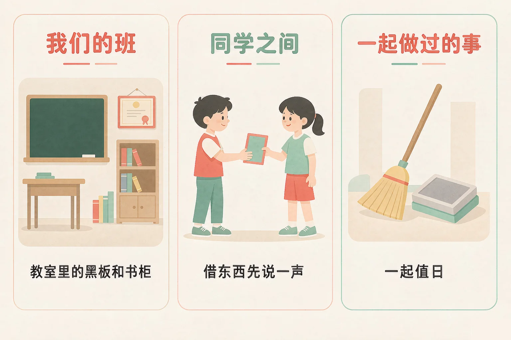
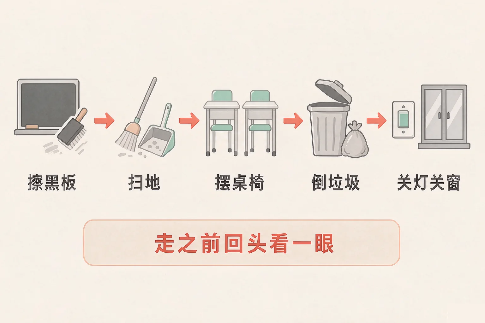

Gallery
v1.0.0 · skill v7.22.0
小学二年级 · 中华优秀传统文化
我们班有那么多同学，为什么说「这是我们班」？

选一个你真正想知道的问题，后面的活动都会围着它转。
选择或输入后，这节课会围绕你的问题展开。
先凭直觉选一个，选完立刻看到解释——错了也没关系，正好知道要重点听哪里。
1. 班里有一条规则：借同学的东西要先说一声。这条规则是为了：
规则不是用来分出谁高谁低的，是让全班一起生活时都方便。错因提醒：常见错误是误认为「规则就是老师管着我们」——想一想，如果大家都不说一声就拿走东西，你会是什么感觉。
2. 教室里地上有几张纸，今天不是你做值日，你会：
班级是大家的，每个人都能做一点。顺手捡一张纸只要几秒钟。错因提醒：容易把「不是我值日」搞混成「和我没关系」——值日只是分工，班级是共有的。
3. 有同学读课文时读错了一个字，旁边有人笑他，你会：
同学读错了很正常，谁都会读错。不笑他、帮他一把，才是友善待人。错因提醒：有人误认为「大家都在笑，我不笑显得不合群」——真正让人愿意待在一起的班级，是不拿别人开玩笑的班级。
为什么要学这一课？
在家里，一起生活的是爸爸妈妈和我（And）；在学校里，每天和我待在一起的是一整个班的同学和老师（But）；这个班是怎么来的、我在这里能做点什么，值得好好想一想（Therefore）。
每天走进教室，你会看到同样的座位、同样的同学。这些东西凑在一起，就是「我们的班」。
我们班里有什么
我的座位、同桌、黑板和书柜、墙上的奖状；每天一起上课的同学，教我们读书的老师；还有一起上过的课、一起参加过的活动、一起打扫过的一次值日。
同学之间怎么相处
借东西先说一声，用完还回去；同学摔倒了，扶他一下；别人说话的时候，先听他说完；用姓名叫人，不给同学起外号。

有的同学误认为「班级是老师管的，跟我关系不大」。其实教室是全班一起用的：讲台上的粉笔灰、地上的一张纸、同桌看不清的黑板，都和我们每个人有关。班级不是某个人的，是我们大家的。
🔍 深层理解 换个角度再看一遍这件事，看看能不能说出背后的原理。
看见它：一个班不是墙上的那张合影，而是每天发生的那些小事：谁帮谁捡了东西，谁和谁一起值日，谁被谁的笑话弄红了眼睛。
解释它：为什么说班级是大家的？因为教室里的一切——黑板、地面、空气里的安静——都由全班每个人一起决定，一个人做得好一点，全班都好一点。
迁移它：这样的相处方式不只用在班里：以后参加小组活动、和邻居相处、和家里人一起做事，用的都是同一套做法——有商量、有分寸、有帮忙。
先点一件在班里可能遇到的事，再从三个做法里选一个。选得好会告诉你为什么，选得不太合适也会告诉你还可以试试什么。
先点一件在班里可能遇到的事。
在班里生活，有三件事值得弄明白。它们看起来很小，天天做，一个班的样子就出来了。

有的同学误认为「值日是老师安排的任务，随便扫两下就算做了」。其实值日不是做给老师看的，是做给全班用的：第二天同学们进来，看到的是干净整齐的教室。所以走之前回头那一看，很值得。
🔍 深层理解 换个角度再看一遍这件事，看看能不能说出背后的原理。
看见它：规则、值日、贡献，都能化成具体的动作：举手、轻声走、先还回去、擦黑板、捡起一张纸。看不见的心意，要靠看得见的动作做出来。
比较它：班级规则是全班一起守的，值日是有分工轮着做的，为班级作贡献是谁都可以做的。三件事不一样，但都在让班级变好。
迁移它：换一个场合也一样：在图书馆、在公交车上、在小区里，都会有「大家都要守的」和「我可以多做一点的」。
上面是六件在班里做的事，下面是三句话。先点一件事，再点它属于哪一类。
我们找到的家
先在上面点一件事。
情境：今天轮到小刚做值日。下课铃响了，同学们都走光了，教室里只剩他一个。他应该怎么做？请你陪他一步一步想清楚。
有的同学误认为「值日就是扫两下地，老师不在就可以快点了事」。可是值日真正服务的是全班同学，不是老师。同样一件事，认真做和应付做，第二天教室的样子完全不同。
说给同桌听：小刚这四步里，哪一步你以前漏掉过？下次轮到你值日，你打算从哪一步开始做起来？
先凭直觉选一个，选完立刻看到解释——错了也没关系，正好知道要重点听哪里。
1. 关于班级里的规则，下面哪个说法是对的？
想一想借东西先说一声、走廊里轻声慢步，这些规则保护的是全班的方便。错因提醒：常见错误是误认为「遵守规则是因为怕老师说」——规则真正管的是让大家都方便。
2. 轮到同学做值日，可他今天生病请假了，你会：
同学有困难的时候帮一把，这就是班级在一起的意思。错因提醒：容易误认为「分工就是各管各的」——分工是为了做事清楚，不是为了让谁落单。
3. 关于「我为班级作贡献」，下面哪个做法最贴近？
贡献不一定很大，就是每天顺手能做的那几件小事。错因提醒：有人误认为「做贡献要做得大、要让人看见」——真正的贡献，常常是没人看见也没关系的那种。
先点一条做法，再点它应该进的筐：对班级好的做法放一边，要调整的做法放另一边。
先在上面点一条做法。
分完之后，想一想：
要调整的做法里，有没有哪一条是「我以前做过」的？把它记下来，再说一说换成对班级好的做法，应该怎么做。
先凭直觉选一个，选完立刻看到解释——错了也没关系，正好知道要重点听哪里。
1. 班里要选一位同学负责每天收作业。你想试试，可是有点怕做不好，你会：
愿意为班级做一件事，本身就很好；不会的地方可以问、可以学。错因提醒：常见错误是误认为「做不好就别做」——先把事情接过来，边做边学，比一直等着更有收获。
2. 你和同桌都想看同一本课外书，你会：
商量一下，两个人都能看到，比抢来抢去好得多。错因提醒：容易误认为「我先拿到就归我」——东西是大家的，商量才是班级里的做法。
3. 有同学在班里被起了外号，他很难受，你会：
不跟着叫，是友善待人的底线；再劝一劝、请老师帮一帮，就是替同学做了一件大事。错因提醒：有人误认为「我又没先叫，跟我没关系」——旁边的人跟着叫，就是让这件事继续下去。
回到开头那个问题：为什么说「这是我们班」？因为班里的黑板、地面、安静和笑声，都由我们每个人一起决定。我做好一点，我们班就好一点。
给别人讲一遍：请用「我们班、规则、值日」这三个词，说清楚一件你明天就能为班级做的小事。
三层练习，做完第一、二层就算通关；第三层留给愿意继续探索的同学。
⭐ 基础巩固（必做）
⭐⭐ 能力应用（必做）
⭐⭐⭐ 迁移挑战（选做）
左边是学它之前要先会的，右边是学会之后可以继续探索的，下面是同一领域的伙伴知识。
图谱正在加载：首次进入需下载知识索引（约 1–3 秒），加载完成后本行会自动消失。